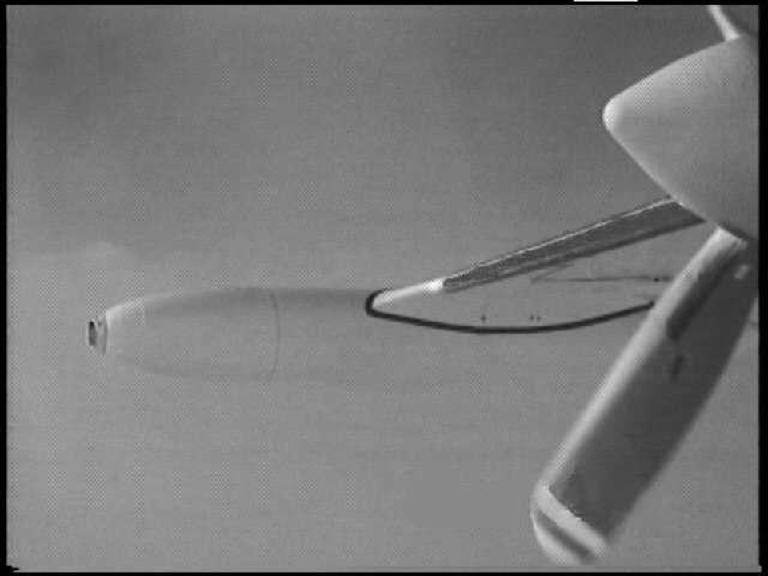

Lesson 20: Engines and APU in Cold Weather
Learning objectives
- Apply cold-start considerations for engines and APU.
- Use engine anti-ice correctly on the ground.
- Explain engine run-up procedures for ice shedding in freezing fog and precipitation.
Monitor every engine parameter during cold starts and in icing conditions.
Cold starts
- Oil is more viscous. Expect higher oil pressure and slower rotation at first. Some engines need a minimum oil temperature before take-off thrust can be used.
- Start times are longer. Monitor N2/N1, EGT and oil pressure closely. Know the starter duty cycle limits, and the hung start and no-light-off procedures.
- Warm-up: the AFM gives a minimum warm-up time after a cold soak before high thrust. Plan it into the taxi.
- Batteries have less capacity in the cold. Use ground power or the APU for engine starts where possible.
- APU: check that the inlet and exhaust are free of snow and ice. The APU may need more time to start and stabilise.
Engine anti-ice on the ground
Switch engine anti-ice on whenever icing conditions exist on the ground or are expected for take-off — OAT 10 °C or below with visible moisture, or with snow, ice, slush or standing water on the surfaces (Lesson 4). Follow the AFM for the timing, such as immediately after engine start, and before entering icing conditions in flight.
Engine inlet and probe ice can give false thrust indications (see the Air Florida 90 case in Lesson 30). Operate engine anti-ice as the AFM requires, and cross-check thrust with all engine parameters.
Engine run-ups for ice shedding
When taxiing or holding for a long time in freezing fog, freezing precipitation or heavy snow, ice can build up on the fan blades and spinner. Many AFMs require periodic run-ups to a specified thrust for a specified time to shed this ice, and a run-up before take-off. Follow the exact values and intervals in your FCOM, and keep clear of other aircraft, vehicles and people behind you.
Turboprops and propellers
- Propellers must be free of ice and snow before engine start.
- Propeller de-ice and engine intake anti-ice/de-ice are used as the AFM specifies.
- Propeller blast can blow snow and slush onto other aircraft and onto your own tail.

Key takeaways
- Cold oil: higher pressure, longer starts, minimum warm-up before take-off thrust.
- Engine anti-ice on whenever icing conditions exist on the ground — per AFM.
- Periodic run-ups shed fan ice in freezing fog and precipitation.
- Iced probes can give false thrust indications — cross-check engine parameters.
Knowledge check
You are holding for 25 minutes in freezing fog. What engine-related action does the AFM typically require?